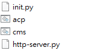

Week2 <<
Previous Next >> Week4
Week3
製作分組專題
標題 : 2021-協同產品實習-stage1-ag2
專題題目 : 飛機起降
動機 : 對設計路徑類的東西有興趣
網站 : 分組網站
分組協同網站同步
當 stage1 兩人一組進行協同時, 要讓各組員 Github 帳號下都帶有分組倉儲與分組網站, 則可以透過 git remote add, 設法讓各組員 Github 帳號下的分組網站內容同步。
操作步驟 :
1.另一個組員設立一個沒有東西的倉儲(名字需要一樣)
2.取得子模組資料後，輸入git remote add xxx https://github.com/另一個組員學號/倉儲名稱.git
3.從另一個組員的setting寄從另一個組員的setting > Manage access寄邀請給自己
4.git push xxx，即完成。
遇到的問題 :
1.推送後顯示 remote: Permission (已解決，尚未從gmail確認對方的invite)
update cmsimde

1.init.py : 其中的 site_title, ip 與 port 可以讓使用者自行修改, site_title 是網站標題, ip 為動態網站啟動時所使用的網路位址, 可設為內部或外部 IPv4 (IPv6), port 則是動態網站啟動時所佔用的埠號
2.http-server.py : 執行後會使用內建的 localhost 與 port 8444 伺服 content 子目錄中的 CMSiMDE 靜態網頁
3.cms.bat : 讓使用者執行動態網站用的批次檔案
4.acp.bat : 如果已經將倉儲設為 ssh 連線, 且提供遠端與近端的認證模式, 就可以使用acp "字串"代替執行 git add ., git commit -m "提交訊息", 以及 git push 三個指令。
遇到的問題 :
1.推送後遠端沒有推送成功，且gmail顯示Page build failure(已解決，cmsimde錯誤，在cmsimde目錄下輸入git checkout 自己的分支即可。)
確認分支方式
.png)
2.wsgi.py打不開，顯示context.load_cert_chain('localhost.crt' . 'localhost.key')(已解決，將倉儲的兩個對應檔案複製進cmsimde目錄下即可。)
以ssh對Github連線
操作步驟 :
1.打開start_ipv6.bat
2.輸入sh及ssh-keygen -t rsa -b 4096 -C "使學號"產生key，打上key的產生區域。
3.利用 puttygen.exe 將上述建立的 Openssh keys 轉為 putty 可以辨識的格式。
4.修改啟動的 start.bat 加入下列設定:
set GIT_HOME=%Disk%:\portablegit\bin\
set GIT_SSH=%Disk%:\putty\plink.exe
修改完成後,重新啟動。
5.將要使用 ssh 連線的倉儲 .git 中的 config 檔案中的 url 設定改為 ssh 連線格式:url = git@github.com:倉儲名稱/cd2021.git。
6.開啟 putty.exe 建立一個 session 名稱為 github.com, 其中指定 Connection > Proxy 與 Connection > SSH > Auth。
7.將下列字串加入SciTE並存儲到\.ssh\config
Host github.com
User git
Port 22
Hostname github.com
TCPKeepAlive yes
IdentitiesOnly yes
8.將所建立的OpenSSH格式的public key內容,加進自己的Github帳號SSH settings中。
遇到的問題 :
1.putty顯示Network error: Connection refused(已解決，proxy設定錯誤)
Week2 <<
Previous Next >> Week4